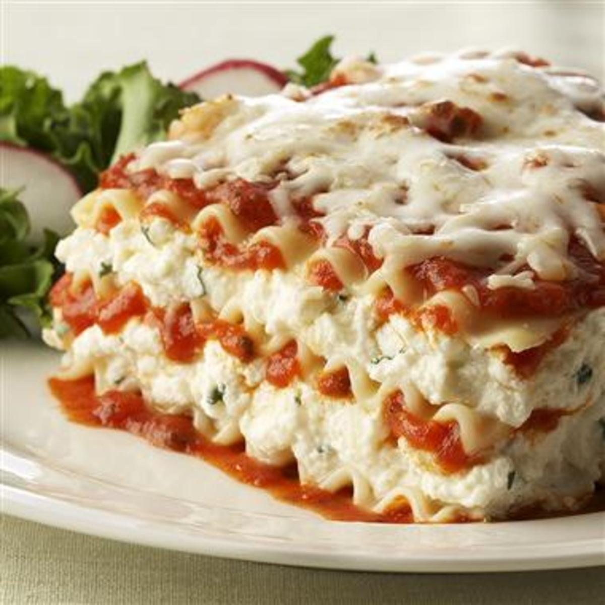

Lasagna Recipe
Home

source: mccormick.com
Description
This homemade lasagna is an Italian classic that's sure to be an instant addition to your recipe book.
As with most lasagna dishes, this one includes a trio of cheeses--ricotta, mozzarella, and Parmesan--for gooey goodness that will have you coming back for more.
Ingredients
Meat Sauce
- 1 lb ground beef
- 2 Tb olive oil
- 1 md. yellow onion, chopped
- 2 tsp parsley
- 2 tsp basil
- 2 tsp oregano
- 1 tsp garlic powder
- 1 1/2 tsp sugar
- 1 tsp salt
- 1/2 tsp crushed red pepper
- 2 cans (28 oz each) crushed tomatoes
- 1 can (14.5 oz) petite diced tomatoes
- 3 Tb tomato paste
- 1/2 cup grated parmesan cheese
Lasagna
- 1 container (32 oz) ricotta cheese
- 2 cups shredded mozzarella cheese, divided
- 1/2 cup grated Parmesan cheese, divided
- 2 eggs, lightly beaten
- 2 tsp parsley
- 1 tsp basil
- 1 tsp garlic powder
- 1 tsp oregano
- 1 tsp salt
Steps
- Preheat oven to 375°F. For the Meat Sauce, brown beef in large skillet. Remove meat from skillet and drain; set aside. Heat oil in same skillet on medium heat. Add onion, parsley, basil leaves, garlic powder, sugar, salt and red pepper flakes; cook and stir 5 to 10 minutes until onions are softened.
- Return beef to skillet and stir in crushed tomatoes, diced tomatoes and tomato paste. Bring to boil. Reduce heat to medium-low; simmer 20 minutes. Remove from heat. Stir Parmesan cheese into sauce. Set aside.
- Meanwhile, for the Lasagna, mix ricotta, 1 1/2 cups of the mozzarella, 1/4 cup of the Parmesan cheese, eggs, parsley, basil leaves, garlic powder, salt and pepper in a large bowl.
- Spread 1 1/2 cups of the sauce in bottom of 13x9-inch baking dish. Top with 1/4 of the lasagna noodles. Spread 1/3 of the cheese mixture over noodles. Top with 1 1/2 cups of sauce. Repeat layers two more times, ending with a layer of pasta and remaining sauce. Spray one side of a large sheet of foil with no stick cooking spray. Cover lasagna with foil, sprayed-side down.
- Bake 35 minutes. Remove foil. Top with remaining 1/2 cup mozzarella and 1/4 cup Parmesan cheese. Increase oven temperature to 475°F. Bake 15 minutes longer, or until cheese is lightly browned. Let stand 15 minutes before serving.